TapPause — Minimal Pause App for iPhone
A minimal pause timer for iPhone to take mindful breaks without distraction.

Tap the button.
Let the time pass.
You don’t have to do anything.
What’s included
- A single pause button
- Adjustable pause duration
- Optional sound and haptics
- Landscape mode support
- No accounts. No data collection.
Free includes a simple 5-minute pause.
Unlock 1–30 minute pauses with a one-time purchase.
Minimal pause timer and mindfulness app for iPhone
TapPause is a minimal pause timer app designed for iPhone users who want to take mindful breaks without distraction. Unlike traditional mindfulness apps, it does not include tracking, streaks, or performance metrics.
As a simple digital detox tool, TapPause helps you step away from constant notifications and reset your focus. It works as a lightweight focus break app — allowing you to pause for 1 to 30 minutes without pressure.
Whether you need a quick pause between tasks or a quiet moment during a busy day, TapPause provides a clean and distraction-free experience.
If you're looking for ways to reduce screen time, read our guide on how to take a break from your phone.
When to use a pause app
TapPause can be used in many everyday situations:
- Take a break from your phone without deleting apps
- Reduce screen time with short intentional pauses
- Create a simple mindfulness habit without pressure
- Reset focus between tasks during work
Read about mindful pauses
Need a firmer boundary?
If mindful pausing isn’t enough to break the scrolling habit, I’m building Step1st. It’s a step-powered app locker designed to help my mom (and myself) stay active by trading steps for screen time.
Join the beta on SubstackReady to take a break?
Start your first pause today. No accounts, no noise, just you.
One-time purchase to unlock all features. No subscriptions.
Frequently Asked Questions
Does TapPause track my usage data?
No. TapPause is built on a 100% offline-first philosophy. We do not collect, store, or share any personal data, usage habits, or analytics. Your peace of mind is our priority.
Is this a subscription-based app?
No. We believe in "Stress-Free" ownership. TapPause offers a one-time purchase to unlock premium features forever. No recurring fees, no hidden costs.
Why is the free version limited to 5 minutes?
The 5-minute pause is scientifically proven to be an effective "micro-break" to reset your focus. The free version allows everyone to access this essential tool, while the Pro version offers flexibility for longer sessions (1–30 minutes).
Can I use TapPause without an internet connection?
Absolutely. TapPause functions entirely on your device. This ensures it works in "Airplane Mode" or deep-work environments where you might want to stay disconnected.